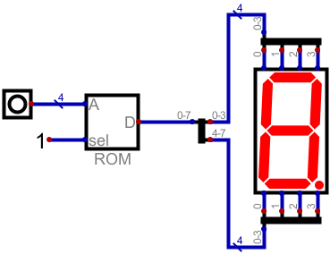

存储器实验
实验任务
-
熟悉RAM组件的用法。
该组件位于菜单项“Components/组件 ➤ Memory/存储器 ➤ RAM ➤ RAM, separated Ports / RAM(独立端口)”。
RAM组件的属性设置为“数据位数：4；地址位数：4”；将RAM组件的所有端口连接到输入输出引脚；通过仿真熟悉RAM的功能、用法，记录仿真过程并保存数据。
-
熟悉ROM组件的用法。
ROM组件位于“Components/组件 ➤ Memory/存储器 ➤ ROM”。
-
按照图 1绘制电路图。
其中ROM组件的属性设置为“数据位数：8；地址位数：4”。 显示组件位于“Components/组件 ➤ IO/输入输出 ➤ Displays/显示 ➤ Seven-Segment Display / 7段数码管”。
图 1. 使用ROM组件构成7段显示译码器 -
用下面的数据初始化ROM的前8个存储单元。
0b00111111 0b00000110 0b01011011 0b01001111 0b01100110 0b01101101 0b01111101 0b00000111 -
仿真
通过输入引脚输入“0000~0111” 8组数据，七段数码管应显示数字“0~7”。如果不是，请检查电路。
-
完善数据使电路能够显示“8~F”
理解显示原理，编写“8~F”的显示数据，填入ROM的后8个存储单元，验证结果是否正确。
-
实验报告要求
-
实验目的
-
实验电路图
要求使用Digital仿真软件导出的电路图，并且包含实验名称和学号、姓名。
-
实验结果与分析
-
RAM仿真结果的分析，从中体现对RAM用法的理解。
-
ROM仿真结果的分析。
说明图 1电路的显示原理；写出“8~F”的显示编码。
-
-
总结
讨论实验中遇到的问题。参照实验目的总结自己的收获。